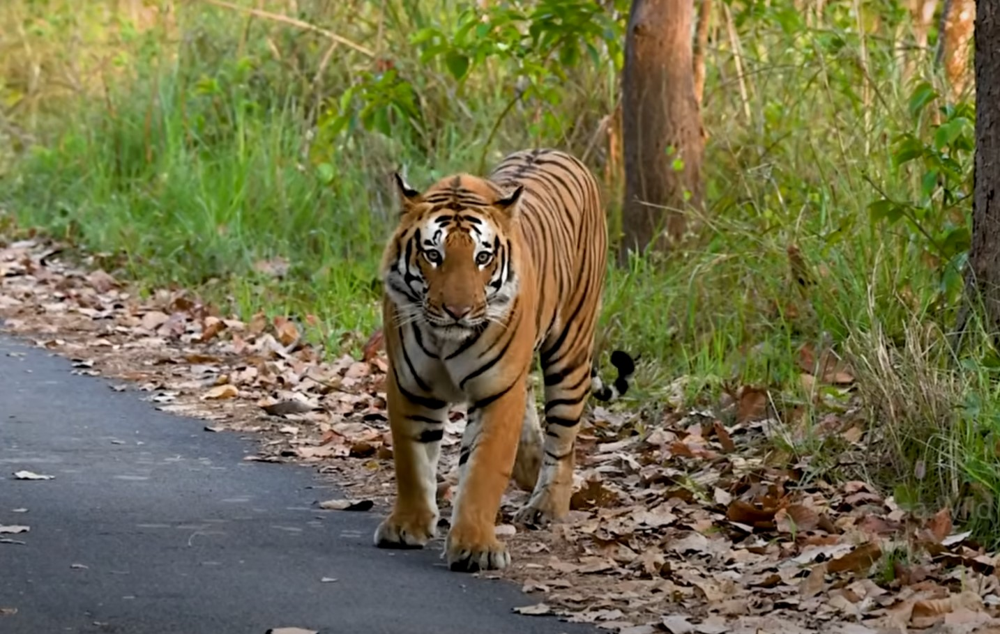
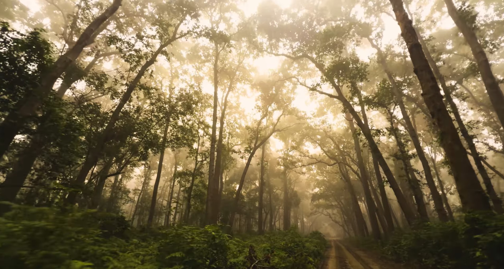
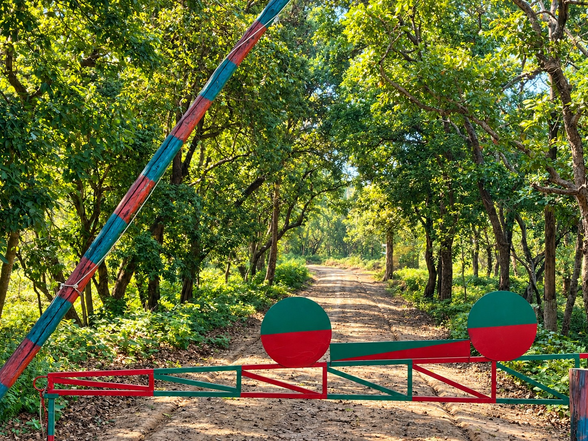
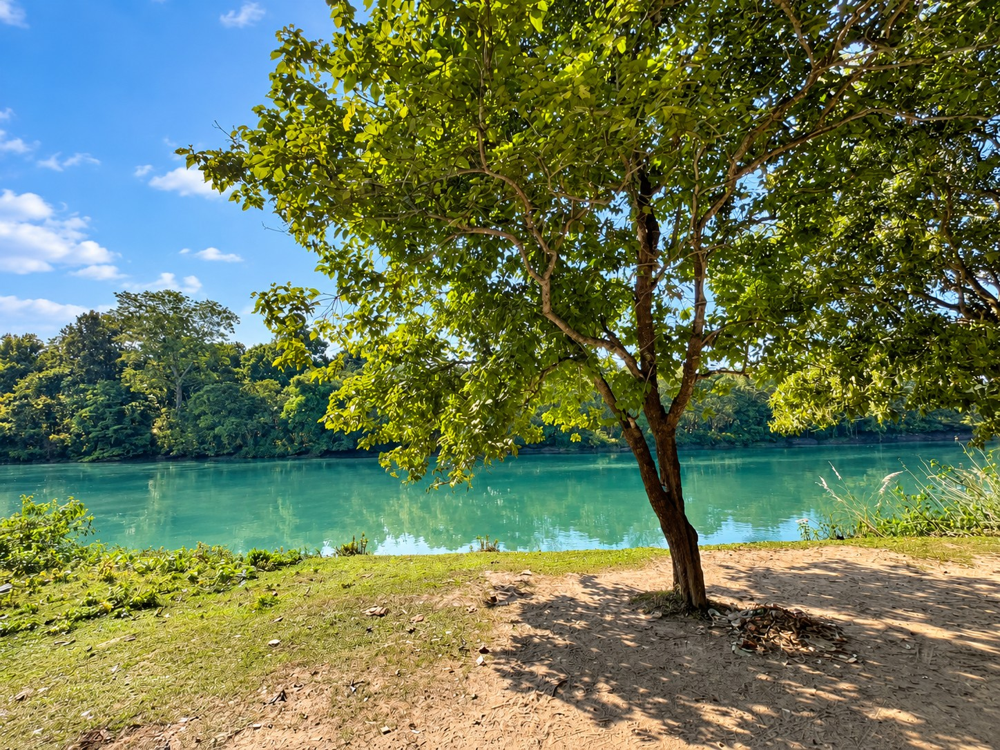

Wildlife
The tiger is part of a larger story.
Look for tracks, alarm calls, deer, birds and changing forest light. A sighting is special because it is never promised.

Pilibhit gives you forest, grassland, water and birds in one peaceful Terai landscape — with the chance to see a tiger in the wild.

Pilibhit Tiger Reserve sits in a productive Terai ecosystem shaped by water and season. The landscape is not a single postcard: it shifts from dense sal forest to open grassland, swamp and reservoir edge.
That variety is what makes the reserve compelling for more than one kind of traveller — photographers, birders, families, first-time safari guests and people who simply want a few days away from city noise.
The reserve’s listed attractions create a fuller wildlife itinerary, even when the forest keeps its most famous resident hidden.
Look for tracks, alarm calls, deer, birds and changing forest light. A sighting is special because it is never promised.

Pair a forest drive with Sharda river views, reservoir light and the open-air feel of the Chuka landscape.

Water, shade and a slow walk make a gentle counterpoint to the energy of a safari morning.
Pilibhit works beautifully as a long weekend from North India and as a slower wildlife stop on a wider Uttar Pradesh journey.
Use the road or rail route via Bareilly and Pilibhit, then settle into a resort day before your safari.
Arrive via the wider regional airport network, then continue onward by road for a slower forest stay.
Pilibhit is connected by rail and road, with safari booking points around Pilibhit, Puranpur and the reserve gates.
“Come for the tiger story. Stay long enough to notice the forest has many voices.”Golden Hut · Pilibhit
Always verify current entry rules, safari availability and seasonal closures before travel.